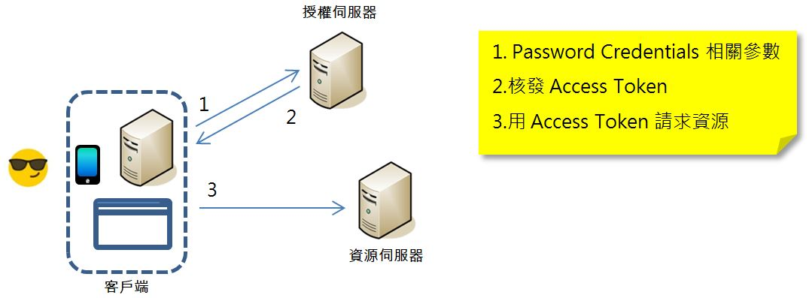

之前已經直接看到，在 Spring 對 OAuth 2 的整合下，如何實作出四個授權流程，以及相關參數的意義以及後端權限控制等設定，不過在一堆程式碼、組態等繞來繞去的，也蠻容易暈的，在這邊一次圖解四個授權流程，以便於對照先前的實作。
首先是最為單純的 Client Credentials 核發流程，客戶端通常是個內部服務，沒有使用者的參與，記得，OAuth 2 中客戶端與使用者的概念是分離的：
接著是有使用者參與的 Password Credentials 核發流程，客戶端可能是個伺服器，也可能是個使用者代理程式，那個表情符號代表，名稱密碼資訊是由使用者提供：

接著 Implicit 核發流程，因為必須在第三方應用程式無法取得使用者名稱、密碼下，又要能授予權限，因此流程上就繁複許多，客戶端通常就是個瀏覽器，應用程式本身只在瀏覽器中執行：
接著又加上了不洩漏 Access Token 給前端的考量，因此 Authorization Code 核發流程又多了個步驟：